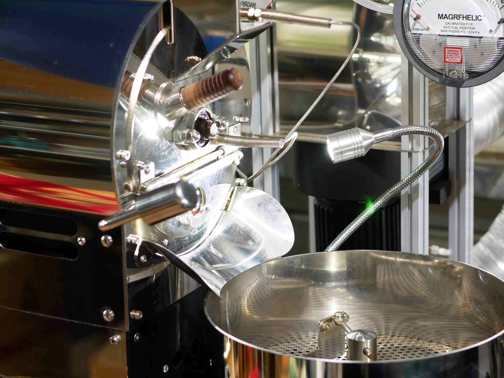

關於竹意軒
竹意軒，位於宜蘭的植栽咖啡品牌。
從培育一株姿態獨特的鹿角蕨或觀賞植物，到悉心烘焙、沖煮一杯風味細膩的單品咖啡。
由負責人的學成專業以及興趣，變成每日的工作日常。
我們邀請您，一同感受這份由綠意與醇香交織的靜謐與美好。
品牌映像

竹意軒，位於宜蘭的植栽咖啡品牌。
從培育一株姿態獨特的鹿角蕨或觀賞植物，到悉心烘焙、沖煮一杯風味細膩的單品咖啡。
由負責人的學成專業以及興趣，變成每日的工作日常。
我們邀請您，一同感受這份由綠意與醇香交織的靜謐與美好。